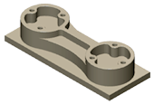

<div id="simulation_show_stock"><p>ストック表示を有効にして、表示オプションを設定できます。</p>

<table class="tipTable" cellspacing="10">
<tr>
<td><center></center></td>
<td><center></center></td>
</tr><tr>
<td><center></center></td>
<td><center></center></td>
</tr></table>
</div>